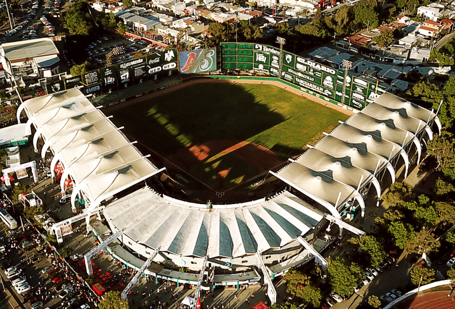
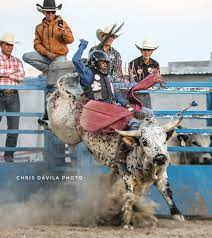

Mi nombre es Alejandro Guadalupe Briseño Duquemi fecha de nacimiento es el 03-diciembre-2003, en la ciudad de Saltillo coahuila, actual mente tengo la edad de 20 años y curso el tercer año de la carrera de Diseño Gráficoen la universidad Vizcaya de las Américas
El beis bol es un deorte que practico desde pequeño, me a tocado participar en torenos estatales y gracias a eso en el año 2019me convocaron en diferentes tryout que consisten en mostrar mis hablilidades como jugador a empresas profesionales de la liga mexicana y ligas mayores. surgio la pandemia y se suspedio todo deporte y no pude continuar, esta es una de las mejores estapas en mi blog personal
Volvi a otro de los deportes que practicaba que es el rodeo que consiste en montar unos toros a una sola mano, lo realize con mis primos una semana santa
